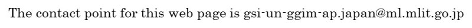

6TH UN-GGIM-AP PLENARY MEETING
Invitation
Invitation Letter[PDF]
Registration Form[word]

Copyright © UN-GGIM-AP
Supported by:
Geospatial Information Authority of Japan
GSI International Twitter
GSI International Facebook
This page was last updated 2017-06-13